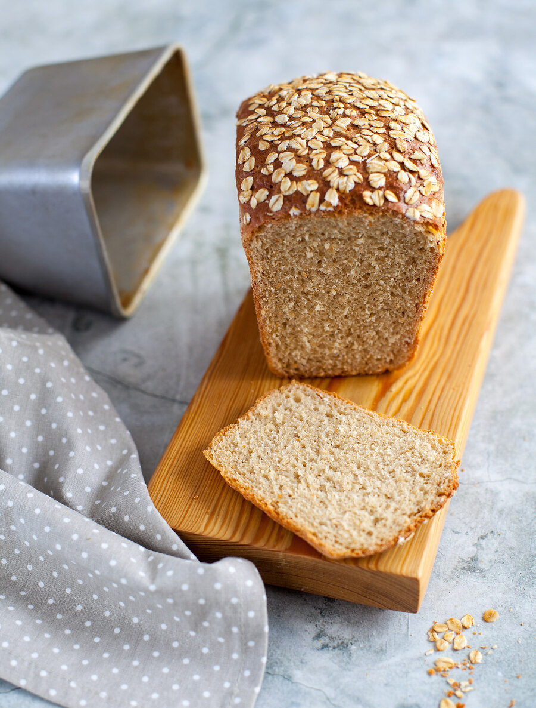

Если овсяной муки нет, можно взять хлопья и смолоть их максимально мелко с помощью блендера или жерновой кофемолки (мельницы). Имейте в виду, что пшеничной муки 1 сорта обычно требуется чуть меньше, чем высшего сорта.
Хлеб можно выпекать как в форме, так и без нее, хотя без формы он получится не таким красивым и аккуратным.
В хлеб можно добавлять яблоки, молотые орехи и корицу, чтобы сделать его еще более ароматным и вкусным.